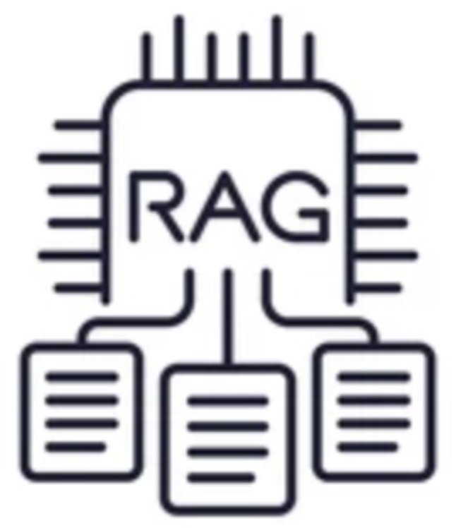
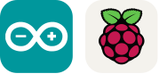
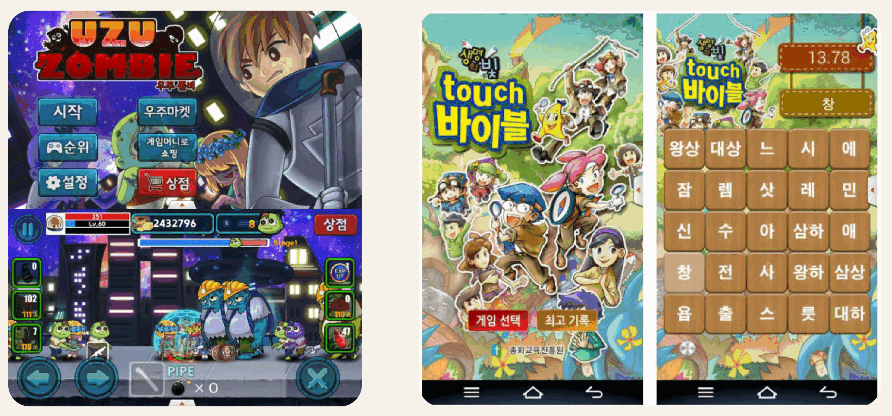
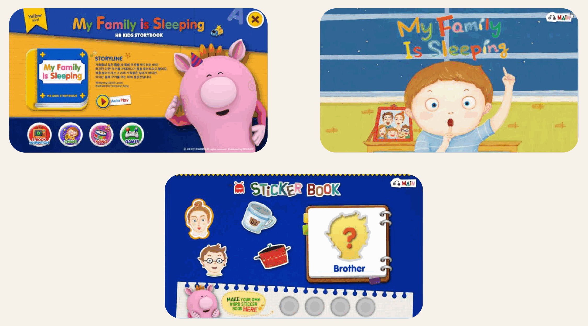

프로젝트에 적용한 기술 스택
Flutter 앱 개발을 중심으로 백엔드 API, 실시간 통신, AI / RAG,
하드웨어 연동까지 프로젝트에 적용하였습니다.
Mobile
Flutter, Flame, Android, iOS, Unity
Backend
FastAPI, REST API, WebSocket, FCM

AI / Data
RAG, ChromaDB, Ollama, ML, 데이터 분석

Hardware
Arduino, ESP32, Raspberry Pi, MQTT, Serial
State / Pattern
Riverpod, Provider, MVVM, 앱 구조 설계
Database
Hive, SQLite, MySQL, Firebase
Language
Dart, C#, Python, Lua, Swift
Collaboration
Git, Slack, 개발 프로세스 구축
Flutter · FastAPI · WebSocket
SyncFlow
2~5인 소규모 팀을 위한 실시간 경량 협업 칸반 보드 앱. 카드 이동, 담당자 변경, 멘션, 초대 코드, Soft Lock 흐름을 구현하였습니다.
- WebSocket 실시간 동기화
- FCM 원격 푸시
- 6자리 초대 코드
- 카드 편집 Soft Lock

Flutter Client · FastAPI Backend · RAG
무장애 관광 챗봇
사용자의 지역, 접근성 조건, 제외 조건을 분석해 TourAPI와 저장 자료 검색을 결합하고, 관광지 추천을 카드 형태로 보여주는 챗봇 프로젝트입니다.


질문을 추천 카드로 바꾸는
처리 흐름
Live API 응답과 저장 자료 검색을 함께 사용해 응답 안정성을 높이고,
사용자가 확인할 수 있는 출처와 주의 문구를 함께 제공합니다.

Flutter · Flame
순서대로 탭탭
1 to 50 게임 룰 기반으로 무작위 숫자나 알파벳을 빠르게 순서대로 클릭해 시간 경쟁을 하는 순발력 퍼즐 게임입니다.
- Flutter Flame 엔진
- 숫자/알파벳 순서 클릭
- 웹 데모 제공
- GitHub 공개

그로비교육 Unity 콘텐츠
태블릿 기반 유아 교육 콘텐츠의 개발과 운영을 담당하였습니다.

천재교육 / 천재교과서 Unity 콘텐츠
책, QR, AR, 블루투스 교보재와 연동되는 교육용 모바일 앱을 제작·운영하였습니다.


2016년 이전 프로젝트
Unity, Lua, ActionScript, 스마트 TV 등 다양한 플랫폼에서 게임과 인터랙티브 콘텐츠를 제작하였습니다.

Unity / Lua Games
우주게임: 우주좀비, 생명의 빛 - Touch 바이블, ATTACK Z, Line Pang

ActionScript App Book
시공미디어 앱북 시리즈, 시사붐붐잉글리쉬 앱북 시리즈

LG Smart TV
시사 잉글리쉬 HB Kids 시리즈